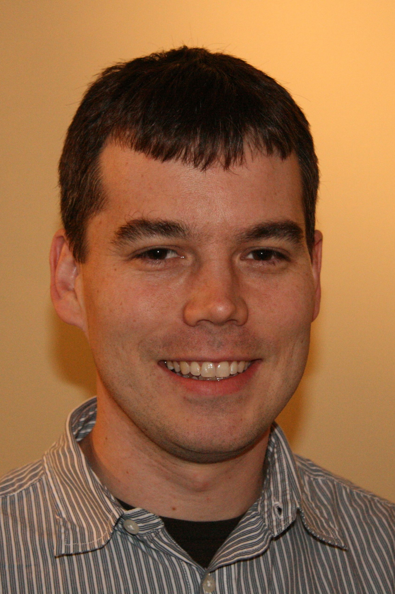

Shane Davis

I am an associate professor in the Department of Astronomy at the University of Virginia. I am a theoretical and computational astrophysicist and my work has frequently focused on the applications to accreting compact objects and feedback from star formation. Although I am a theorist, much of my work has involved direct modeling of observational data.
Before arriving at the University of Virginia, I was a senior research associate at the Canadian Institute for Theoretical Astrophysics. Previously, I was a postdoctoral member and Chandra Fellow at the Institute for Advanced Study. I obtained my Ph.D. from the physics department at UCSB and a B.S. in physics from Carnegie Mellon University.
Publications
CV